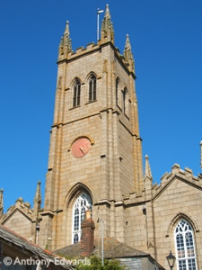

Churches, Religion & Places of Worship in Penwith
Throughout the District of Penwith there are 67 churches covering almost every different belief system.
|
|
The nearest Mormon Church is at Helston. Other churches are scattered around on the coastline at St Just, Mousehole, Newlyn and inland villages. These churches provide regular service's, crèche  facilities, Junior Church Worship, fellowship meetings, Bible Study and Prayer meetings.
facilities, Junior Church Worship, fellowship meetings, Bible Study and Prayer meetings.
- St Mary's Church - Church of England (01736 363079)
Chapel Street, Penzance
www.cofePenzance.org.uk
- St John's Church - Church of England (01736 333187)
Trewartha Terrace, Penzance
www.cofePenzance.org.uk
- Chapel Street Methodist Church - Methodist (01736 363052)
Chapel Street, Penzance
pzmethodist.org.uk
- Heamoor Methodist Church - Methodist (01736 350057)
Heamoor, Penzance
- High Street Methodist Church - Methodist
High Street, Penzance
- Penzance Baptist Church - Baptist (01736 365887)
Clarence Street, Penzance
- Church of the Immaculate Conception - Roman Catholic (01736 362619)
Rosevean Road, Penzance
www.Penzancecatholicchurch.org
- The Salvation Army - Salvation Army (01736 330090)
Queen Street, Penzance
- Society of Friends - Quaker (01736 365362)
Old St. Paul's School, Taroveor Road, Penzance
- Shekinah Christian Church - Shekinah (01736 332437)
St. Thomas Anglican Church, Heamoor, Penzance
www.shekinahchurch.co.uk
Places of worship in the wider area
- St Just Church - Church of England (01736 788672)
St Just, Penzance
- St John the Baptist Church - Church of England (01736 788777)
Pendeen, Penzance
www.cofePenzance.org.uk
- St Pol de Leon - Church of England (01736 7312611)
Paul, Penzance
- St Peter's Church - Church of England (01736 362678)
The Coombe, Newlyn, Penzance
- St Maddern Church - Church of England (01736360992)
Madron, Penzance
- St Gulvan Church - Church of England (01736 362699)
Gulval, Penzance
- All Saints Church - Church of England (01736 362699)
Marazion, Penzance
- Trewellard Methodist Chapel - Methodist (01736 798964)
Trewellard, Pendeen, Penzance
- St Just Methodist Church - Methodist (01736 788506)
Chapel Road, St. Just, Penzance
- St Levan Methodist Chapel - Methodist
St Levan, Porthcurno, Penzance
- Mousehole Methodist Church - Methodist
Chapel Street, Mousehole, Penzance
- Trinity Methodist Church - Methodist (01736 363594)
Chywoone Hill, Newlyn, Penzance
- Centenary Methodist Church - Methodist
Gwavas Road, Newlyn, Penzance
- Marazion Methodist Church - Methodist (01736 710529)
Marazion, Penzance
- Society of Friends - Quaker (01736 711243)
Marazion, Penzance
images - 784533.co.uk